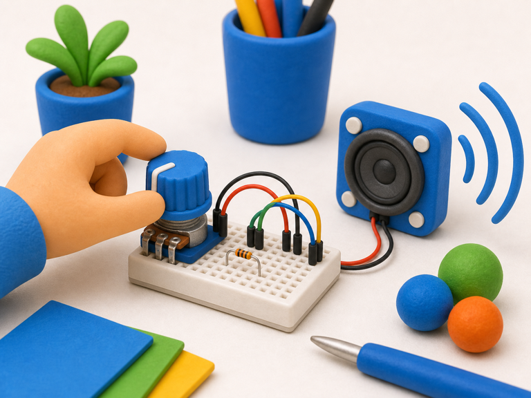
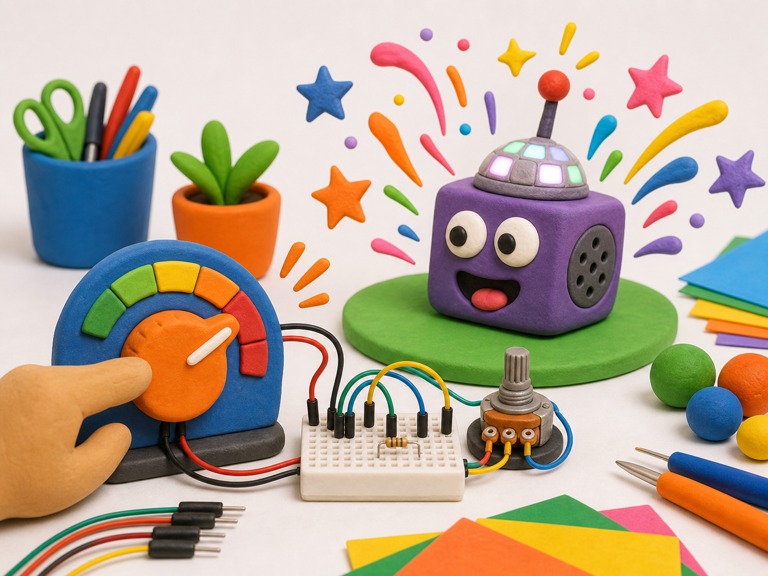

Volume knob
DetectKnob is turned
->
DecideNew level chosen
->
DoSet volume
A potentiometer is a knob your project can read.
Turning the shaft changes the voltage on the middle pin, giving your code a value from low to high.
Your projects can use a potentiometer for volume, speed, brightness, choices, and silly dials.


from gpiozero import MCP3008
pot = MCP3008(channel=0)
level = pot.valuefrom picozero import Potentiometer
pot = Potentiometer(26)
level = pot.valuelevel when your project needs to react to the knob.